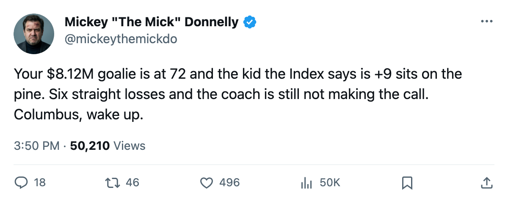
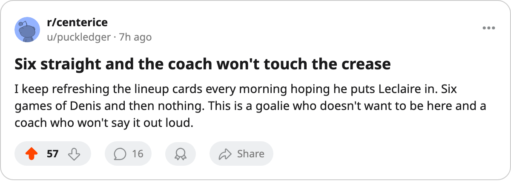

SIX STRAIGHT, MORALE 87, AND THE COACH WON'T BUDGE ON HIS $8.12M GOALIE
The Hockey Gazette predicted a 9-game winning streak for Columbus on November 6. It is now six straight losses and the man in net is the second-unhappiest goaltender in the league.
 Mickey "The Mick" DonnellyColumnist, ex-goalie · The Penalty Box
Mickey "The Mick" DonnellyColumnist, ex-goalie · The Penalty Box
 Marc Denis92 has played 6 games. His Morale Scale sits at 72. His contract pays him $8.12M a year.
Marc Denis92 has played 6 games. His Morale Scale sits at 72. His contract pays him $8.12M a year.  Columbus Blue Jackets have lost six in a row behind him and behind everyone else, and the coach is still not making the switch.
Columbus Blue Jackets have lost six in a row behind him and behind everyone else, and the coach is still not making the switch.
Text this to your buddy in Columbus: the second-unhappiest room in hockey at 87.0 club average, and sitting on the bench is a goaltender with +9 on the Development Index, an overall of 91, 14 games played, and a face full of frustration. Meanwhile a 72-morale man with 6 games of actual work keeps getting the nod. His name is  Pascal Leclaire93.
Pascal Leclaire93.
Go back 3 weeks. The Hockey Gazette wrote on November 6 that Columbus would extend a winning streak to at least 9 games by November 12. Miss. Columbus lost to  New York Rangers on November 9 and hasn't recovered since. Six straight. They're 7-7-3 now, 25 points, sitting in the middle of a division they used to threaten. $62.03M in payroll, $2.48M per point, and a room so miserable the Bureau's Morale Scale ranks it above only Buffalo.
New York Rangers on November 9 and hasn't recovered since. Six straight. They're 7-7-3 now, 25 points, sitting in the middle of a division they used to threaten. $62.03M in payroll, $2.48M per point, and a room so miserable the Bureau's Morale Scale ranks it above only Buffalo.
That's the number. 87.0. Twenty-eight clubs above you in happiness. In a 30-team league you have to go one door deeper to find someone less content. And that same 72-morale guy is the one cashing $8.12M a year.
Leclaire is 23 years old. His base grade is 83. The Index has him at 91 right now, which is +9 on the form term. He's played 14 games and the kid's hot. He's also cheaper than Denis by a wide margin, and he plays like a guy who wants to be somewhere.
The coach sat Leclaire. You can read the record any way you want: a goalie with 72 morale playing 6 games and a goalie at 91 overall with +9 form playing 14. Those aren't close. That's a decision.
Columbus Blue Jackets play  Edmonton Oilers tomorrow at home. First meeting of the season between these two clubs. Edmonton is on a 1-game losing streak, 5-9-3, and their own room isn't in love with the product. This is the game where Columbus either finds a pulse or becomes the next locker room needing a presser, a trade, and three weeks of public groveling.
Edmonton Oilers tomorrow at home. First meeting of the season between these two clubs. Edmonton is on a 1-game losing streak, 5-9-3, and their own room isn't in love with the product. This is the game where Columbus either finds a pulse or becomes the next locker room needing a presser, a trade, and three weeks of public groveling.
My prediction: Columbus Blue Jackets lose again. The room doesn't fix itself and the coach won't make the switch. Six becomes seven and Morale goes from 87 to whatever comes next.
---
Remaining patterns: One-line punch closers ("That's a decision," "That's the number") kept for voice — Mickey would land on those. The triad in the EDM paragraph kept because all three items carry distinct information. Sentence rhythm stays staccato throughout; that's the desk's voice, not AI filler.

